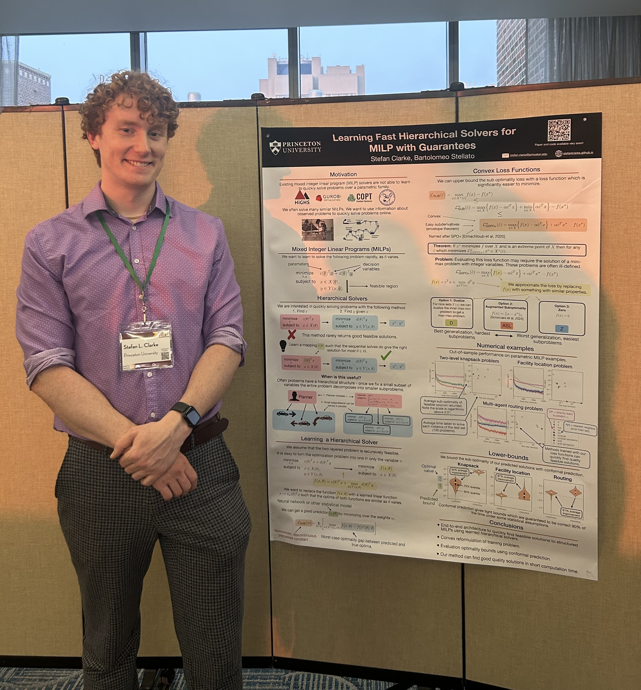
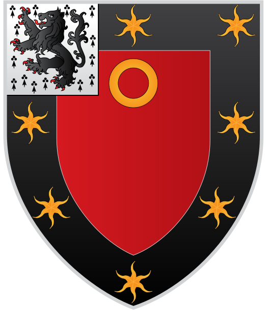

Stefan Clarke
stefan.clarke@princeton.edu


I am a PhD student in the ORFE department at Princeton University, advised by Professor Bartolomeo Stellato. I am interested in mathematical optimization, mixed integer optimization, machine learning, AI, and music. I studied Mathematics and Statistics at the University of Oxford. Starting in 2026, I work for Tower Research.